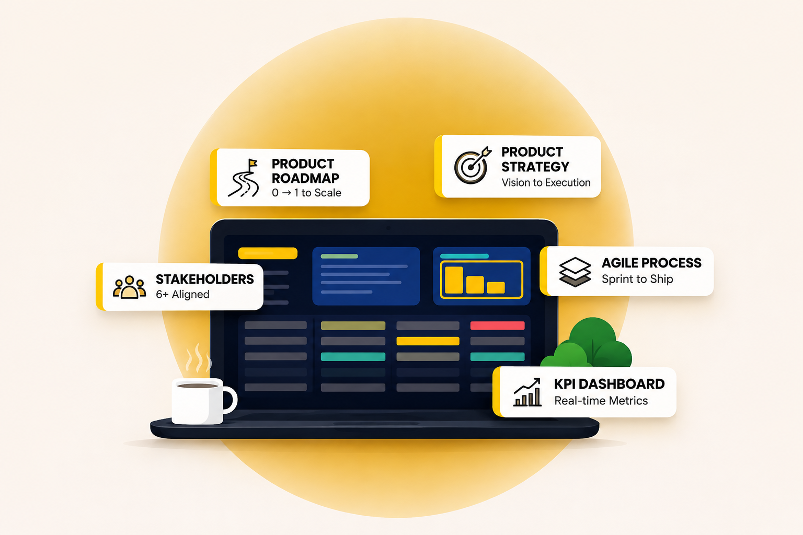
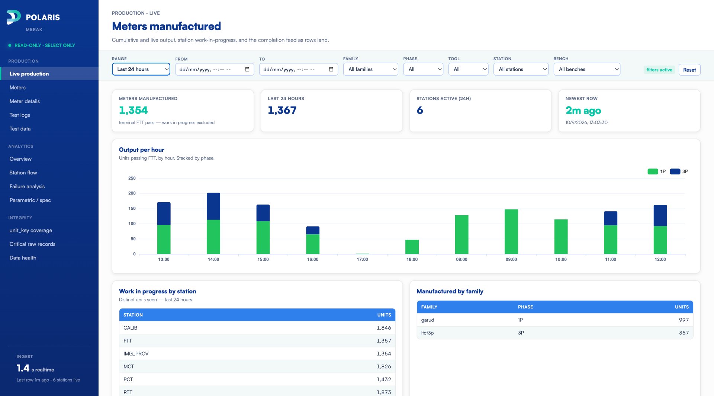
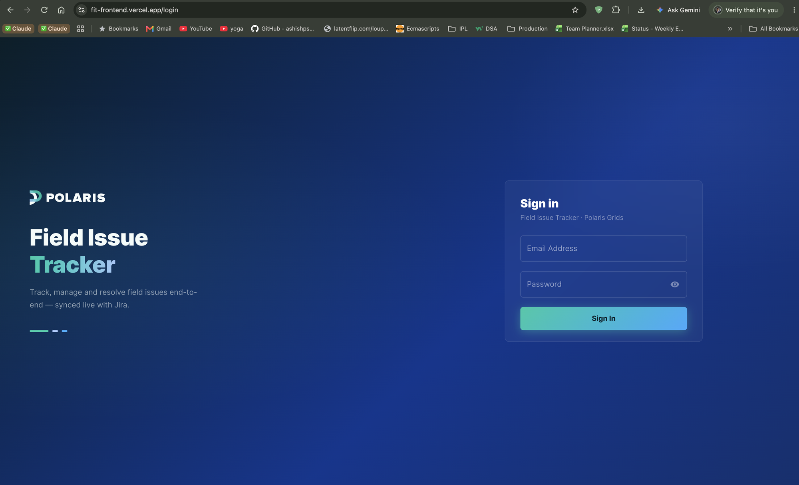
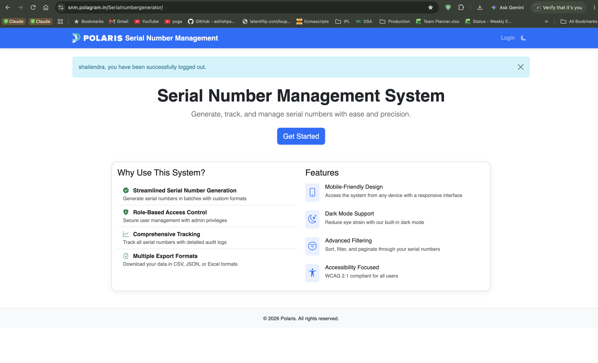

Technical Product Manager with 5+ years building enterprise software and B2B platforms in energy-tech and industrial operations. At Polaris Smart Metering I own full product lifecycle - from discovery through PRDs, sprint delivery and stakeholder adoption. On-time delivery lifted from 60% to 90%+. Cycle time cut by 40%.

I'm a Technical Product Manager with 5+ years building B2B enterprise software and operational platforms. I specialise in turning complex, multi-stakeholder business problems into well-scoped products that engineering teams can ship and users actually adopt. Currently SDE-3 Team Lead at Polaris Smart Metering, where I own product lifecycle across internal platforms for manufacturing, field operations and smart metering infrastructure.
My domain is industrial and energy-tech, but the PM craft is transferable: I run discovery with frontline users, write PRDs, prioritise with engineering constraints in mind, manage stakeholder alignment across Production, QA and R&D, and iterate based on adoption feedback. I lead 14+ engineers in 2-week Agile sprints - hands-on with Python, SQL and REST APIs, not just managing from a distance.
Pursuing the International Certificate in Product Management (ICPM) - including a Generative AI Co-Strategist module - from the Institute of Product Leadership, USA. Previously at Secure Meters Ltd., building data-driven smart metering systems at 10,000+ device scale across utility deployments in India.
Seven capability areas spanning the full product lifecycle - from AI-first strategy to shipped, data-driven software.
My domain is industrial and energy-tech. The PM craft is transferable. Here's an honest assessment of fit across four role types.
Illustrated using Merak - the operational intelligence platform I conceived and shipped at Polaris. All steps reflect verified historical decisions.
This framework is applied to every product decision. The Merak example reflects verified historical decisions.
How I discovered user problems, designed products and shipped connected operational software across a 150+ person engineering organisation.
Polaris Smart Metering (formerly Gram Power) manufactures smart electricity and gas meters for utility deployments across India - with a 5 million meter/year production facility in Jaipur and a 150+ person Engineering & R&D team. The company operates as an AMISP across 5 states, 7 utilities and 7.5 million electric meters deployed. Products include single-phase smart meters, the Nebula smart gas meter, and the Avdhaan AI-powered software suite. The operational ecosystem spans production stations, firmware calibration, testing, serial traceability, field issue management and cross-team coordination - all previously managed through disconnected manual processes.
Manufacturing had no live production data. Teams relied on end-of-shift summaries that were often incomplete or inaccurate.
Field issues were logged in paper registers - often lost between shifts, with no audit trail or accountability.
Requirements arrived via WhatsApp with no structured format, traceability or prioritisation mechanism.
Defects weren't caught at the right station, leading to rework, wasted engineering time and production delays.
Serial numbers were assigned manually with no duplicate detection, range validation or audit trail system.
Stakeholders had no visibility into engineering progress, causing 3+ major delivery slippages per quarter.
What changed when Merak, FIT and SNM went live
| Domain | AS-IS (Before Dec 2024) | TO-BE (After) |
|---|---|---|
| Production tracking | WhatsApp groups + paper logbooks. No live status. | Merak live dashboard. Real-time throughput across 6 stations. |
| Serial traceability | Manual Excel sheets. Error-prone, no audit trail. | SNM - RBAC, batch generation, audit trail, multi-format export. |
| Field issues | Email chains. No lifecycle, no ownership. | FIT - 7-stage lifecycle, Jira-synced, SLA-driven triage. |
| Firmware status | Verbal updates in stand-ups only. | Merak real-time calibration view, visible to all teams. |
| Coordination | Ad-hoc meetings. No audit trail. | Structured workflows, automated alerts, RCA/CAPA. |
| Delivery | ~60% on-time | 90%+ on-time |
Actual screenshots from live production systems. Each product started from a real user problem, went through discovery, prioritisation and stakeholder alignment before shipping.

Problem: Production leads had no real-time visibility into station throughput or firmware calibration. Status came via end-of-shift verbal reports - often incomplete. My decision: Prioritise live dashboard and WIP tracking for MVP; deferred user authentication tiers and export features to v2 based on stakeholder input.

Problem: Field issues were reported via email and WhatsApp with no ownership, no lifecycle, no SLA. Issues fell through the cracks between Production, QA and R&D. My decision: Built a workflow tool - not just a tracker - with RBAC and Jira sync as MVP requirements, because cross-team access and existing tool integration were blockers to adoption.

Problem: Serial numbers were allocated manually in Excel with no duplicate detection or audit trail. At 1,000+ device deployments, this caused traceability failures downstream. My decision: RBAC and immutable audit trails were non-negotiable in scope; mobile interface and advanced reporting were deferred post v1 adoption.
A structured field issue management system replacing ad-hoc email chains. 7-stage lifecycle, role-based access and automated Jira sync ensure every issue is owned, tracked and resolved.
Measurable outcomes from smart metering product programs
7 peer-reviewed papers and book chapters across smart grids, AMI, cybersecurity in energy systems and reliability engineering.
7 PapersAdvanced metering infrastructure architecture, communication protocols and deployment strategies.
Security frameworks for smart metering networks and utility infrastructure.
Fault tolerance, failure analysis and system reliability in energy distribution systems.
SVNIT (NIT Surat) · 2019–2021
CGPA 8.50 / 10MBM Engineering College, MBM University, Jodhpur · 2016–2019
CGPA 7.84 / 10Board of Technical Education, Rajasthan · 2013–2015
76.55%Institute of Product Leadership, USA · Jun–Nov 2026
In ProgressInstitute of Product Leadership · November 14, 2026 · Built full GTM strategy for FROZO - covering market research, positioning, pricing, acquisition and financial planning as part of the ICPM capstone.
Certificate of RecognitionPM Fundamentals · Product Design (Figma, Balsamiq, Miro) · Agile PM · GTM Strategy · Data-Driven Products · Generative AI Co-Strategist
Fundamentals of Project Planning and Management · 2020
Effective Problem-Solving · Initiating & Planning Projects · Managing Project Risks · 2020
I enjoy solving complex problems, working with ambitious teams, and turning ideas into products that deliver measurable impact. Open to Product Manager and Technical PM roles in B2B platforms, enterprise and industrial software.